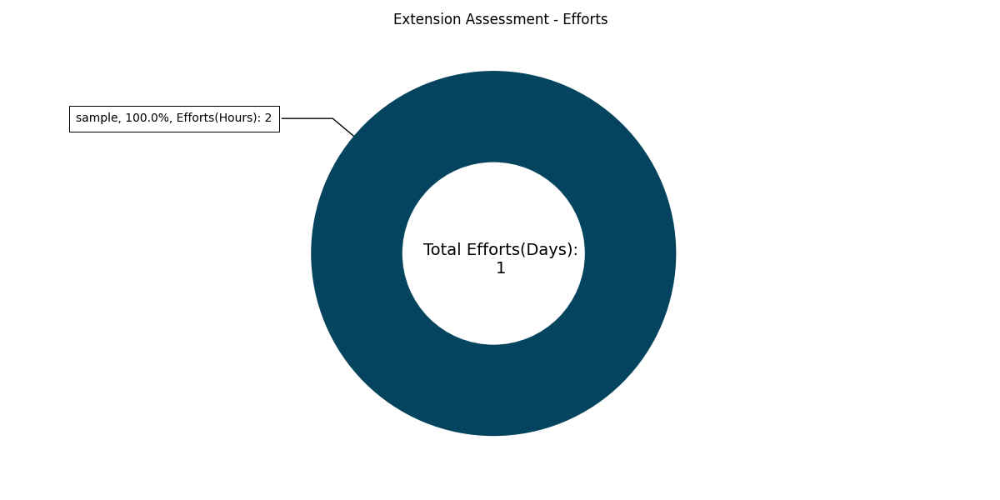
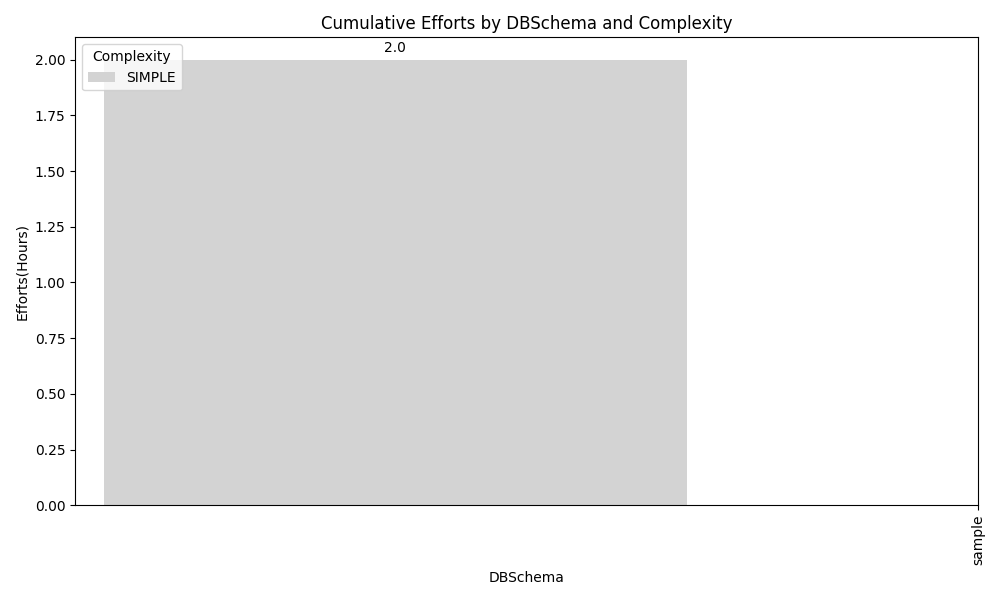
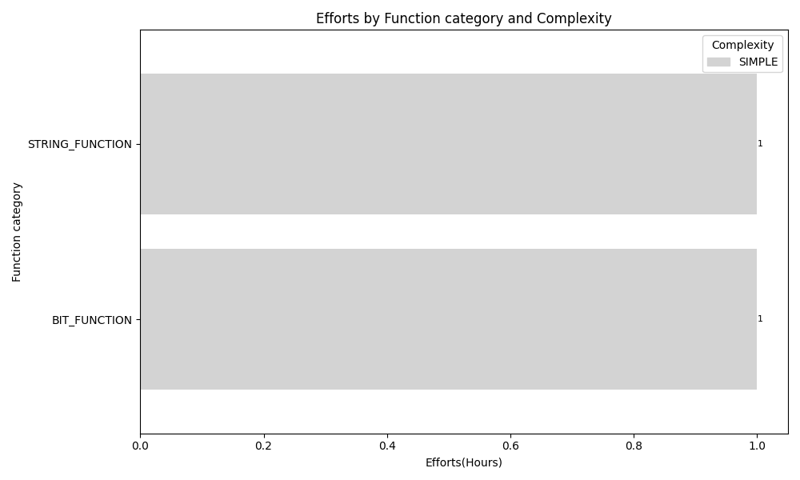

Our analysis of extension dependencies identifies 2 extension functions spread across 1 schemas ( sample: 1 days).
The estimated effort to transform these functions into free, open-source PostgreSQL options totals 1 days. This effort includes conversion, testing, and documentation tasks. These transformations aim to leverage the benefits of PostgreSQL's open-source nature and align with our commitment to open-source solutions and freedom to migrate.



| Current Time | DB Date Time |
|---|---|
| Current Database Time | 2024-07-11 05:59:08 |
| Engine | Database Name | Version | SCT Oracle Extension Exists |
|---|---|---|---|
| PostgreSQL | sqlserver | PostgreSQL 15.7 | True |
| AWS Extension Version |
|---|
| 1.0.671 |
| DBSchema | Category | Sub - Category | AWS Extension Dependency | SCT Function Reference Count | Function category | complexity | Efforts(Hours) |
|---|---|---|---|---|---|---|---|
| sample | Procedural | Standalone-Functions | aws_sqlserver_ext.strpos3 | 1 | STRING_FUNCTION | SIMPLE | 1 |
| sample | Procedural | Standalone - Procedure | aws_sqlserver_ext.tomsbit | 2 | BIT_FUNCTION | SIMPLE | 1 |